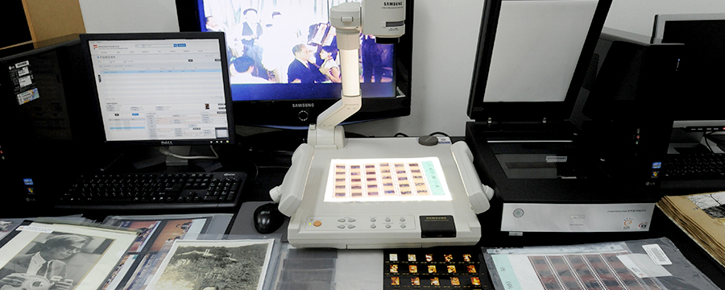
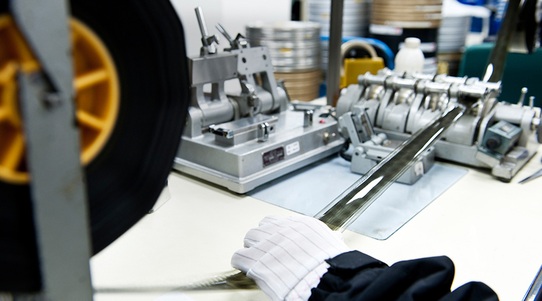
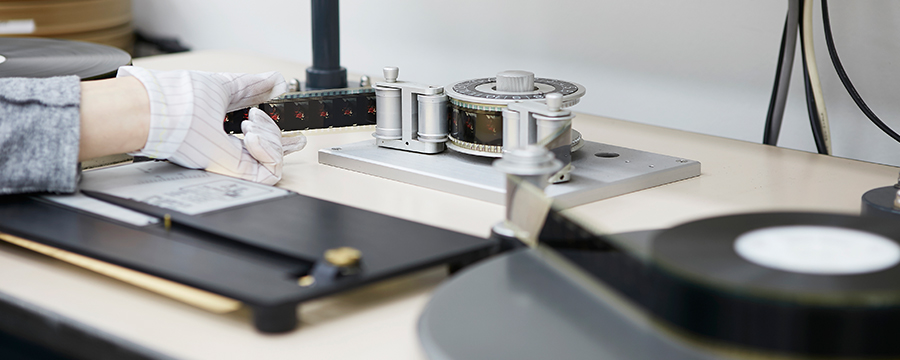

기관소개
영화를 모아 문화를 만드는 곳
인사말
연혁
하는일
비전
김 홍 준
한국영상자료원
2002 ~
2018. 04. 11
SEAPAVAA(동남아시아태평양시청각아카이브협회) 정회원 가입 비준(제22차 SEAPAVAA 방콕 총회)
2012. 02. 16
보유 영화 ( 필름 ) 1 벌 , 근대 문화재 등록
2008. 05. 09
시네마테크KOFA, 한국영화박물관 공식 개관
2007. 11. 21
고전영화 VOD 서비스 실시
2007. 09. 17
보유 영화 ( 필름 ) 7 벌 , 근대 문화재 등록
2007. 06. 01
영상도서관 개관
2007. 05. 16
상암동 청사로 이전 (서울 마포구 월드컵북로 400)
2006. 02. 02
한국영화데이터베이스 KMDb 서비스 실시
2004. 12. 14
종합영상아카이브센터 기공식 ( 상암동 DMC 부지 )
2002. 06. 10
특수법인 한국영상자료원 설립 ( 영화진흥법 제 24 조의 3) 및 재단법인 해산
재단법인 한국영상자료원
1991 ~ 2002
2002. 04. 21
제 58차 FIAF 서울총회 개최
1998. 04. 01
한국영화정보 인터넷 서비스 실시
1998. 04. 01
한국영화정보 인터넷 서비스 실시
1996. 07. 01
국내영화 필름 등의 제출제도 시행
1994. 01
영상자료 보존사업에 대한 국고 보조 시작
1991. 09. 01
기관명칭 변경 (재단법인 한국영상자료원 )
재단법인 한국필름보관소
1974 ~ 1990
1990. 09. 15
예술의 전당으로 이전 ( 서울 서초구 서초동 700 번지 )
1985. 04. 30
FIAF( 국제영상자료연맹 ) 정회원 가입 비준 ( 제 41 차 FIAF 뉴욕 총회 )
1976. 05. 24
FIAF( 국제영상자료연맹 ) 옵서버 자격 획득
1974. 01. 18
재단법인 한국필름보관소 설립 ( 서울 중구 남산동 3 가 34-5, 영화진흥공사 사옥 내 )
수집
국내와 해외에 산재된 영상자료를 적극적으로 발굴, 수집

한국영상자료원은 국내외 영화 필름과 함께 다양한 비필름 자료들(비디오물, 오디오물, 포스터, 스틸, 시나리오, 도서, 정기간행물, 의상, 소품, 영화인 애장품)를 포함하여 모든 영상자료를 수집하고 있습니다. 영화 필름은 극영화와 함께 뉴스릴, 기록물 등의 비극영화까지, 다양한 규격의 필름부터 최근 디지털 파일까지 모두 수집 대상이 됩니다. 최근에는 한우섭&한규호 부자 컬렉션을 통해 미보유 중이었던 국내 극영화 94편을 수집할 수 있었습니다. 한국영상자료원은 국내 뿐 아니라 해외에 산재되어있는 영상자료들 역시 적극적으로 발굴, 수집하고 있으며, 최근에는 이규환 감독의 <해연>(1948)을 일본 고베영화자료관에서 복사 수집한 바 있습니다.
복원
필름의 생명을 연장하는 보존처리 및 복원 작업

한국영상자료원에 수집되어 보존 중인 한국 영화 필름은 현존하는 가장 오래된 극영화 필름인 <청춘의 십자로>(1934)를 비롯해 4천 편이 넘습니다. 2010년대에 들어와 거의 모든 영화가 디지털로 제작되기 전까지 한국영화사를 수놓았던 이 영화 필름들은 우리 모두의 자산이자 앞으로 태어날 미래세대에 전해줄 소중한 문화유산입니다.
그러나 필름은 시간이 지남에 따라 자연 열화하는 매체입니다. 때문에 한국영상자료원은 열화의 속도를 지연시키는 각종 보존처리 작업과 새 필름에 옮기는 복원 작업을 병행하고 있습니다. 이를 통해 필름의 생명이 연장됩니다. 한국에서 현재 필름 복원을 위한 인화, 현상 시설을 갖춘 곳은 한국영상자료원이 유일합니다.
보존
필름 영구 보존을 위한 최적의 보존관리 및 체계적인 점검

실물로 존재하는 필름은 문화, 역사적 정보를 담는 매체로서 가치가 크며, 현존하는 가장 안정적인 영상 매체이기도 합니다. 이러한 중요한 필름자료의 보존을 위해 한국영상자료원에서는 항온, 항습 시설을 갖춘 전문 보존고를 상암, 파주에 이원 운영하여 근본적으로 자료 소실 위험을 최소화 하고 있습니다.
필름은 다양한 물리적, 화학적인 영향에 의해 훼손이 발생하며 언젠가는 생명을 다하게 됩니다. 한국영상자료원은 필름의 생명 연장을 위해 필름 특성에 맞는 최적의 온, 습도를 상시 모니터링 하여 유지하고 있습니다. 그리고 주기적으로 필름 훼손 정도를 가늠 할 수 있는 색농도와 수축도 변화 측정 및 필름 되감기, 약품투입 등을 실시하여 관리 하고 있습니다. 필름의 보존처리과정에서 사용되는 필름캔, 폴리백 등 보존처리용품은 모두 ISO에 규정된 보존역량 테스트(PAT, Photographic Activity Test)를 통과한 것들을 사용합니다. 이처럼 필름의 유형별로 최적의 보존관리 및 체계적인 점검을 실시하여 필름자료를 영구적으로 보존하기 위한 최선의 노력을 기울이고 있습니다.
동시대 영상자료
확대
수집범위
영상자료
보존안정성
강화
보존매체
기술역량
강화
시네마테크 상영
관람 저변
확대
큐레이션을 통한
영상자료 접근성
강화
영상아카이브
학술ㆍ교육
강화
영상자료
디지털 활용 소스
제작 확대
영상자료
관리시스템
고도화
수요자 중심
데이터 공유개방
확대
안전 및
책임경영
실현
효율적
조직운영 및
관리
대국민
소통
강화